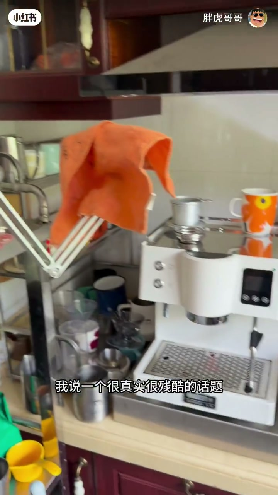
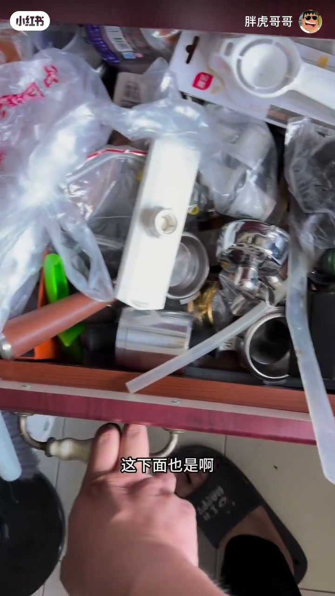
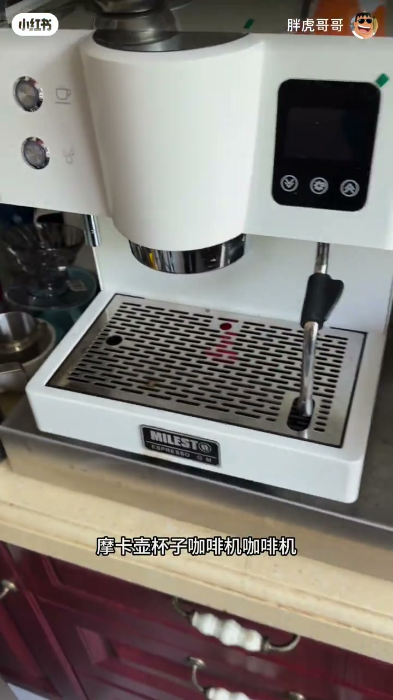
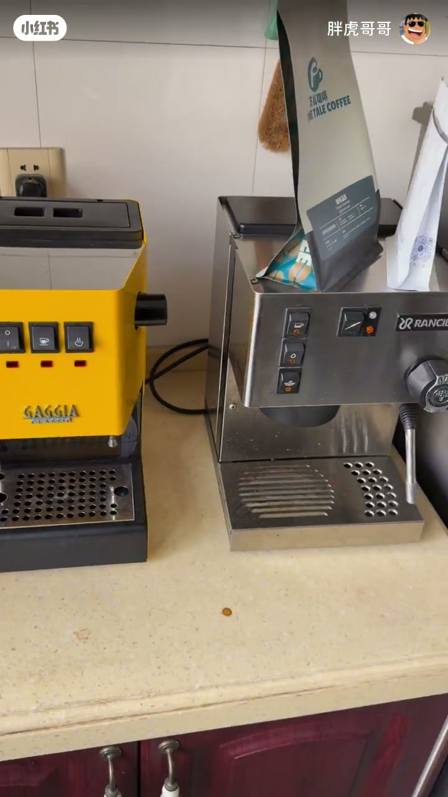

内容要点
知识结构
[00:00→00:13]
点题
咖啡爱好者通病；做发烧友很真实很残酷。
[00:13→00:38]
设备巡礼
抽屉里的手柄零件、粉锤、摩卡壶、杯子、多台磨豆机与咖啡机。
[00:38→00:46]
结论
很多闲置用不上，劝理性消费。
总结
咖啡发烧的终点往往是设备闲置；理性消费比再买一台更要紧。
图文实录
通病开场
00:00 – 00:13
口播直接点「咖啡爱好者的通病」「很真实很残酷」，为后面的设备山铺垫。
这是咖啡爱好者的通病啊

[00:06]开场：点出发烧友通病
Opening: naming the coffee-enthusiast common problem
抽屉与柜面
00:13 – 00:38
拉开抽屉全是手柄零件；粉锤能数到一二十个；摩卡壶、杯子、咖啡机、五台磨豆机轮番出镜——视觉上完成「堆设备」论证。
粉锤都一二十个啊
五台磨豆机

[00:17]抽屉：手柄与零件也堆满
Drawer: portafilters and parts piled up too

[00:29]柜面：磨豆机咖啡机并列
Counter: multiple grinders and machines side by side
闲置与劝退
00:38 – 00:46
「其实很多东西都是闲置的」「用不上」，收束到理性消费。
所以大家理性消费不要冲动

[00:40]收束：闲置用不上，理性消费
Close: much sits unused—consume rationally